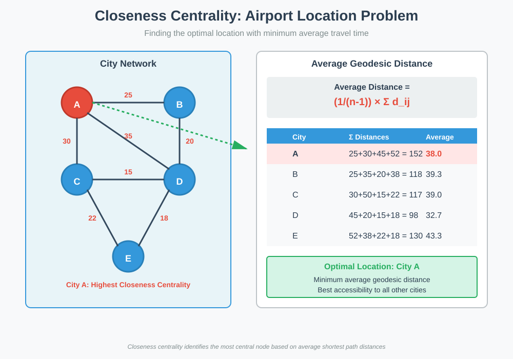
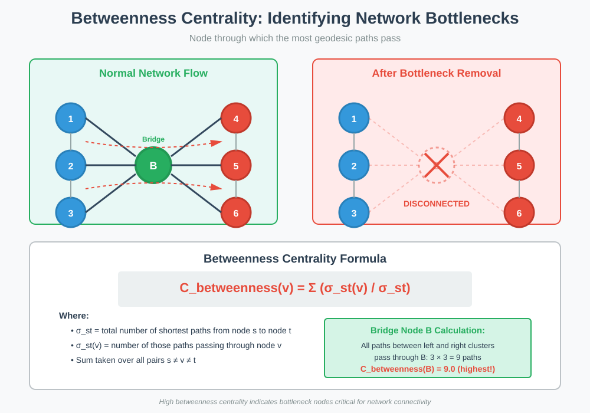
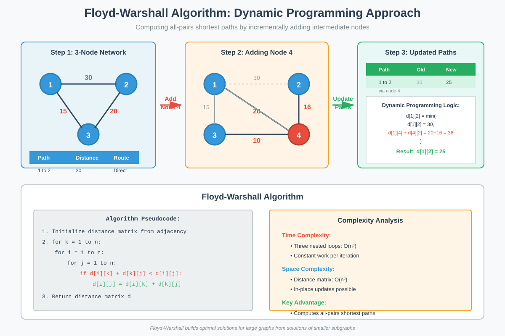
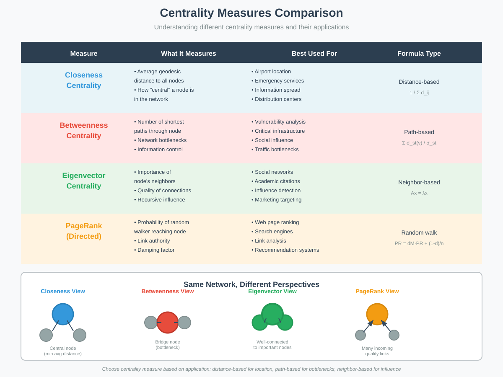

Spatial Centrality Measures of a Node
📋 Quick Navigation
- Introduction
- Closeness Centrality
- Betweenness Centrality
- Floyd-Warshall Algorithm
- Edge Centrality
- Applications
- Implementation Guide
- References & Further Reading
🎯 Introduction
While eigenvector centrality and PageRank are excellent for identifying influential nodes in social networks and ranking web pages, they are less appropriate for spatial and geographic applications. This documentation explores spatial centrality measures that focus on distances and information flow within networks.
Key Concepts:
- Closeness Centrality: Measures how central a node is based on its average geodesic distance to all other nodes
- Betweenness Centrality: Identifies bottlenecks by measuring how many shortest paths pass through a node
- Geodesic Path: The shortest path between two nodes in a network
- Spatial Networks: Networks where edge weights represent physical distances or travel times

Why Spatial Centrality Matters:
- Infrastructure Planning: Optimal placement of airports, hospitals, or distribution centers
- Network Reliability: Identifying critical nodes whose failure would disrupt the network
- Information Dissemination: Finding optimal starting points for spreading accurate information
- Resource Allocation: Determining where to invest in network improvements
📍 Closeness Centrality
Definition and Motivation
Consider the problem of deciding where to build a new airport in a region. The optimal location should minimize average travel time to all cities in the region. This is precisely what closeness centrality measures.
Mathematical Definition:
For a node \(i\) in a network with \(n\) nodes, the closeness centrality is:
C_closeness(i) = 1 / [(1/(n-1)) × Σ d_ij]
= (n-1) / Σ d_ij
Where:
- \(C_{closeness}(i)\) = closeness centrality of node \(i\)
- \(d_{ij}\) = geodesic distance from node \(i\) to node \(j\)
- \(n\) = total number of nodes in the network
- The sum is taken over all nodes \(j ≠ i\)
Alternative Formulation (Average Geodesic Distance):
Average Geodesic Distance = (1/(n-1)) × Σ d_ij
The node with the smallest average geodesic distance has the highest closeness centrality.
Computing Geodesic Distances
Using the Adjacency Matrix:
Given an adjacency matrix \(A\) where entries represent travel times (or distances):
- \(A^1\): Contains direct connections (1-hop paths)
- \(A^2\): Contains 2-hop paths (through one intermediate city)
- \(A^k\): Contains \(k\)-hop paths (through \(k-1\) intermediate cities)
Geodesic Distance Formula:
d_ij = min{nonzero entries of A^k_ij for all k}
The geodesic distance is the minimum nonzero value across all powers of the adjacency matrix.
Airport Location Example
Problem Setup:
- Vertices: Cities in the region
- Edges: Direct routes with weights representing travel times
- Goal: Find the city with minimum average travel time to all other cities
Steps:
- Construct Adjacency Matrix: Create symmetric matrix with travel times as edge weights
- Compute Powers of A: Calculate \(A^2, A^3, ..., A^{n-1}\) to find all path lengths
- Extract Geodesic Distances: For each pair \((i,j)\), find minimum nonzero entry
- Calculate Average Distances: For each city, compute average geodesic distance
- Select Optimal Location: Choose city with smallest average
Example Calculation:
For city i with N=5 cities:
Geodesic distances: d_i1=20, d_i2=15, d_i3=30, d_i4=25
Average = (1/(5-1)) × (20+15+30+25) = 90/4 = 22.5
Applications of Closeness Centrality
Information Dissemination:
- Problem: Spreading accurate information before rumors distort the message
- Solution: Start from a person with high closeness centrality
- Benefit: Reaches all community members with minimum message distortion
Emergency Services:
- Optimal placement of hospitals or fire stations
- Minimizes average response time to all locations
Logistics and Distribution:
- Warehouse location selection
- Minimizes average delivery time or cost
Urban Planning:
- Public transit hub placement
- Accessibility optimization for public services
🔗 Betweenness Centrality
Definition and Concept
While closeness centrality identifies central nodes, betweenness centrality identifies bottlenecks—nodes whose removal would most disrupt information flow.

Bottleneck Definition:
A bottleneck is a node through which the largest quantity of information flows, or equivalently, whose removal would most disrupt the network.
Mathematical Definition:
C_betweenness(v) = Σ (σ_st(v) / σ_st)
Where:
- \(C_{betweenness}(v)\) = betweenness centrality of node \(v\)
- \(σ_{st}\) = total number of shortest paths from node \(s\) to node \(t\)
- \(σ_{st}(v)\) = number of those paths that pass through node \(v\)
- Sum is taken over all pairs \(s ≠ v ≠ t\)
Key Assumptions
Information Flow Model:
- Constant Speed: Information flows at constant speed along edges
- Shortest Paths: Information always takes geodesic paths
- Proportionality: Amount of information through a node is proportional to the number of geodesic paths
Implications:
- Nodes on many shortest paths have high betweenness centrality
- Removing high-betweenness nodes fragments the network
- Useful for identifying critical infrastructure
Network Bottleneck Example
Simple Network Analysis:
Consider a network where:
- Node A connects two otherwise disconnected clusters
- All shortest paths between clusters pass through A
- Node A has very high betweenness centrality
Quantitative Example:
Network with 6 nodes arranged in two groups of 3:
- Left group: {1, 2, 3}
- Right group: {4, 5, 6}
- Bridge node: B
Paths through B:
- 1→4, 1→5, 1→6 (3 paths)
- 2→4, 2→5, 2→6 (3 paths)
- 3→4, 3→5, 3→6 (3 paths)
Total paths through B = 9
If each path is unique: C_betweenness(B) = 9
Applications of Betweenness Centrality
Social Networks:
- Influencers: People with power to change messages being passed
- Information Gatekeepers: Individuals who control information flow between groups
- Bridge Personalities: Connectors between different social clusters
Transportation Networks:
- Critical Airports: Hubs whose closure would severely impact flight connectivity
- Bridge Infrastructure: Roads or bridges that are essential for traffic flow
- Vulnerable Nodes: Locations requiring enhanced security or redundancy
Communication Networks:
- Router Criticality: Network devices handling the most traffic
- Backbone Identification: Core infrastructure elements
- Failure Impact: Nodes whose failure would cause widespread disruption
Cybersecurity:
- Attack Surface: Nodes most attractive for adversarial targeting
- Defense Priority: Infrastructure requiring highest protection
- Network Resilience: Understanding system vulnerabilities
🔄 Floyd-Warshall Algorithm
Algorithm Overview
The Floyd-Warshall algorithm efficiently computes shortest paths between all pairs of nodes using dynamic programming. It builds solutions for larger graphs from solutions of smaller subgraphs.

Core Principle
Dynamic Programming Idea:
Start with shortest paths in small subgraphs and incrementally add nodes, updating shortest paths as needed.
Recursive Relationship:
For each pair of nodes \((i, j)\) and intermediate node \(k\):
d_ij^(k) = min(d_ij^(k-1), d_ik^(k-1) + d_kj^(k-1))
Where:
- \(d_{ij}^{(k)}\) = shortest distance from \(i\) to \(j\) using nodes \({1, 2, ..., k}\) as intermediates
- \(d_{ij}^{(k-1)}\) = shortest path not using node \(k\)
- \(d_{ik}^{(k-1)} + d_{kj}^{(k-1)}\) = path through node \(k\)
Algorithm Steps
Step-by-Step Process:
- Initialization:
- Create distance matrix \(D^{(0)}\) from adjacency matrix
- Set \(d_{ii} = 0\) for all nodes \(i\)
-
Set \(d_{ij} = w_{ij}\) if edge exists, else \(∞\)
-
Iterative Updates:
-
For \(k = 1\) to \(n\):
- For all pairs \((i, j)\):
- Update: \(d_{ij}^{(k)} = \min(d_{ij}^{(k-1)}, d_{ik}^{(k-1)} + d_{kj}^{(k-1)})\)
-
Result:
- Final matrix \(D^{(n)}\) contains all shortest path distances
Detailed Example
Three-Node Network:
Initial setup with nodes {1, 2, 3}:
Direct distances:
d_12 = 30, d_13 = 15, d_23 = 20
Iteration k=0 (direct paths):
1→2: 30
1→3: 15
2→3: 20
Adding Fourth Node:
When adding node 4 with distances: \(d_{14} = 20\), \(d_{24} = 16\), \(d_{34} = 10\), \(d_{42} = 5\)
Path 1→2:
- Direct: d_12^(3) = 30
- Via node 4: d_14 + d_42 = 20 + 5 = 25
- Update: d_12^(4) = min(30, 25) = 25
Path 1→4→2 is shorter!
Iteration Table:
| Path | Distance | Iteration | Using Node |
|---|---|---|---|
| 1→2 | 30 | 0 | Direct |
| 1→4→2 | 25 | 1 | Node 4 |
Pseudocode
def floyd_warshall(adjacency_matrix):
"""
Compute all-pairs shortest paths
Parameters:
- adjacency_matrix: n×n matrix with edge weights
Returns:
- distance_matrix: n×n matrix with shortest path distances
"""
n = len(adjacency_matrix)
dist = copy.deepcopy(adjacency_matrix)
# Initialize diagonal to 0
for i in range(n):
dist[i][i] = 0
# Main algorithm
for k in range(n):
for i in range(n):
for j in range(n):
if dist[i][k] + dist[k][j] < dist[i][j]:
dist[i][j] = dist[i][k] + dist[k][j]
return dist
Complexity Analysis
Time Complexity:
O(n³)
Three nested loops, each iterating over \(n\) nodes.
Space Complexity:
O(n²)
Storage for the \(n \times n\) distance matrix.
Comparison with Other Algorithms:
- Dijkstra (single-source): \(O(n^2)\) or \(O((n+m)\log n)\) with heap
- Bellman-Ford (single-source): \(O(nm)\)
- Floyd-Warshall (all-pairs): \(O(n^3)\)
For dense graphs where you need all-pairs shortest paths, Floyd-Warshall is often the most efficient choice.
🌉 Edge Centrality
Definition and Motivation
Just as nodes can have centrality measures, edges can also be evaluated for their importance in the network. Edge centrality identifies critical connections whose removal would most impact network connectivity.
Edge Betweenness Centrality:
C_edge(e) = Σ (σ_st(e) / σ_st)
Where:
- \(C_{edge}(e)\) = betweenness centrality of edge \(e\)
- \(σ_{st}(e)\) = number of shortest paths from \(s\) to \(t\) passing through edge \(e\)
- \(σ_{st}\) = total number of shortest paths from \(s\) to \(t\)
Applications
Road Networks:
- Critical Bridges: Bridges whose closure would severely impact traffic flow
- Bottleneck Roads: Streets handling disproportionate traffic volume
- Detour Planning: Understanding alternative routes when roads are closed
Power Grids:
- Transmission Lines: Critical connections in electrical distribution
- Failure Analysis: Identifying vulnerable power transmission paths
- Redundancy Planning: Where to add backup connections
Communication Networks:
- Cable Routes: Critical fiber optic or network cable paths
- Bandwidth Bottlenecks: Connections requiring capacity upgrades
- Network Segmentation: Understanding how network failure propagates
Computing Edge Centrality
Method 1: Direct Computation
For each edge \((u, v)\):
- Find all shortest paths in the network
- Count how many pass through edge \((u, v)\)
- Normalize by total number of shortest paths
Method 2: Node-Based Approximation
Use node betweenness of endpoints as proxy for edge importance:
C_edge(u,v) ≈ f(C_betweenness(u), C_betweenness(v))
Method 3: Removal Testing
- Remove edge \((u, v)\)
- Measure network disruption (increased path lengths, disconnected components)
- Rank edges by disruption impact
Edge vs Node Centrality

Key Differences:
- Node Centrality: Focuses on vertex importance
- Closeness: How quickly information reaches all nodes
-
Betweenness: Control over information flow
-
Edge Centrality: Focuses on connection importance
- Critical links between communities
- Physical infrastructure (roads, cables)
- More relevant for infrastructure planning
When to Use Each:
- Use Node Centrality: Social networks, influence analysis, resource allocation
- Use Edge Centrality: Infrastructure planning, reliability analysis, physical networks
🎯 Applications
Comparative Analysis of Centrality Measures
Summary Table:
| Centrality Type | Measures | Best For | Example Use Case |
|---|---|---|---|
| Closeness | Average distance | Central location | Airport placement |
| Betweenness | Path dependency | Bottleneck identification | Network security |
| Eigenvector | Neighbor importance | Influence | Social media marketing |
| PageRank | Link authority | Ranking | Web search |
Domain-Specific Applications
1. Urban Planning and Transportation:
- Airport Location Selection:
- Use closeness centrality to minimize average travel time
- Consider betweenness for hub importance
-
Balance with operational constraints (land availability, costs)
-
Public Transit Design:
- Closeness centrality for station placement
- Edge centrality for critical routes
- Betweenness for transfer point identification
2. Emergency Response:
- Hospital Placement:
- Closeness centrality for average response time
- Consider population density weighting
-
Account for road network characteristics
-
Emergency Shelter Location:
- Maximize accessibility during disasters
- Identify locations with shortest average evacuation distance
3. Social Networks:
- Information Dissemination:
- Start campaigns from high closeness centrality individuals
- Use betweenness centrality to identify influencers who bridge communities
-
Monitor for message distortion at high-betweenness nodes
-
Community Detection:
- Low edge betweenness within communities
- High edge betweenness between communities
- Helps identify natural social clusters
4. Infrastructure Security:
- Critical Node Protection:
- High betweenness centrality nodes are vulnerable
- Prioritize security for bottleneck locations
-
Develop redundancy for critical nodes
-
Network Resilience:
- Model failure scenarios for high-centrality nodes
- Design backup routes around bottlenecks
- Assess cascading failure risks
5. Supply Chain Optimization:
- Distribution Center Location:
- Closeness centrality for average delivery time
- Consider demand patterns and inventory costs
-
Balance centrality with operational efficiency
-
Route Optimization:
- Edge centrality identifies critical shipping routes
- Plan backup routes for high-centrality edges
- Optimize for both cost and reliability
💻 Implementation Guide
Python Implementation with NetworkX
Installation:
pip install networkx matplotlib numpy
Complete Example:
import networkx as nx
import matplotlib.pyplot as plt
import numpy as np
# Create a sample network
G = nx.Graph()
edges = [
(1, 2, {'weight': 30}),
(1, 3, {'weight': 15}),
(2, 3, {'weight': 20}),
(2, 4, {'weight': 16}),
(3, 4, {'weight': 10}),
(1, 4, {'weight': 20})
]
G.add_edges_from(edges)
# Compute closeness centrality
closeness = nx.closeness_centrality(G, distance='weight')
print("Closeness Centrality:")
for node, score in closeness.items():
print(f" Node {node}: {score:.4f}")
# Compute betweenness centrality
betweenness = nx.betweenness_centrality(G, weight='weight')
print("\nBetweenness Centrality:")
for node, score in betweenness.items():
print(f" Node {node}: {score:.4f}")
# Compute edge betweenness
edge_betweenness = nx.edge_betweenness_centrality(G, weight='weight')
print("\nEdge Betweenness Centrality:")
for edge, score in edge_betweenness.items():
print(f" Edge {edge}: {score:.4f}")
# Visualize the network
pos = nx.spring_layout(G, seed=42)
plt.figure(figsize=(12, 5))
# Plot with closeness centrality
plt.subplot(121)
node_sizes = [v * 3000 for v in closeness.values()]
nx.draw(G, pos, node_size=node_sizes, node_color='lightblue',
with_labels=True, font_size=12, font_weight='bold')
plt.title("Network with Closeness Centrality\n(node size ~ centrality)")
# Plot with betweenness centrality
plt.subplot(122)
node_sizes = [v * 3000 for v in betweenness.values()]
nx.draw(G, pos, node_size=node_sizes, node_color='lightcoral',
with_labels=True, font_size=12, font_weight='bold')
plt.title("Network with Betweenness Centrality\n(node size ~ centrality)")
plt.tight_layout()
plt.show()
Floyd-Warshall Implementation
def floyd_warshall(graph):
"""
Compute all-pairs shortest paths using Floyd-Warshall algorithm
Parameters:
- graph: Dictionary of dictionaries representing weighted graph
graph[i][j] = weight of edge from i to j
Returns:
- dist: Dictionary of dictionaries with shortest path distances
- next_node: Dictionary for path reconstruction
"""
# Initialize distance matrix
nodes = list(graph.keys())
dist = {i: {j: float('inf') for j in nodes} for i in nodes}
next_node = {i: {j: None for j in nodes} for i in nodes}
# Set direct edges and self-loops
for i in nodes:
dist[i][i] = 0
for j in graph[i]:
dist[i][j] = graph[i][j]
next_node[i][j] = j
# Floyd-Warshall algorithm
for k in nodes:
for i in nodes:
for j in nodes:
if dist[i][k] + dist[k][j] < dist[i][j]:
dist[i][j] = dist[i][k] + dist[k][j]
next_node[i][j] = next_node[i][k]
return dist, next_node
def reconstruct_path(next_node, start, end):
"""Reconstruct shortest path from start to end"""
if next_node[start][end] is None:
return []
path = [start]
while start != end:
start = next_node[start][end]
path.append(start)
return path
# Example usage
graph = {
1: {2: 30, 3: 15, 4: 20},
2: {1: 30, 3: 20, 4: 16},
3: {1: 15, 2: 20, 4: 10},
4: {1: 20, 2: 16, 3: 10}
}
distances, next_nodes = floyd_warshall(graph)
print("All-Pairs Shortest Distances:")
for i in distances:
for j in distances[i]:
if i != j:
path = reconstruct_path(next_nodes, i, j)
print(f"{i} → {j}: distance = {distances[i][j]}, path = {' → '.join(map(str, path))}")
Google Colab Integration
Interactive Centrality Analysis:

# Colab-ready code for interactive analysis
!pip install networkx matplotlib
import networkx as nx
import matplotlib.pyplot as plt
from IPython.display import display, HTML
def analyze_network(edges_with_weights):
"""
Comprehensive network centrality analysis
Parameters:
- edges_with_weights: List of (node1, node2, weight) tuples
"""
G = nx.Graph()
G.add_weighted_edges_from(edges_with_weights)
# Compute all centrality measures
closeness = nx.closeness_centrality(G, distance='weight')
betweenness = nx.betweenness_centrality(G, weight='weight')
degree = dict(G.degree(weight='weight'))
# Create comprehensive report
results = []
for node in G.nodes():
results.append({
'Node': node,
'Closeness': closeness[node],
'Betweenness': betweenness[node],
'Degree': degree[node]
})
# Display as formatted table
import pandas as pd
df = pd.DataFrame(results)
df = df.sort_values('Betweenness', ascending=False)
display(HTML("<h3>Network Centrality Analysis</h3>"))
display(df)
# Visualization
plt.figure(figsize=(15, 5))
pos = nx.spring_layout(G, seed=42)
# Closeness visualization
plt.subplot(131)
node_colors = [closeness[node] for node in G.nodes()]
nx.draw(G, pos, node_color=node_colors, cmap='YlOrRd',
with_labels=True, node_size=800, font_size=10)
plt.title("Closeness Centrality")
plt.colorbar(plt.cm.ScalarMappable(cmap='YlOrRd'), ax=plt.gca())
# Betweenness visualization
plt.subplot(132)
node_colors = [betweenness[node] for node in G.nodes()]
nx.draw(G, pos, node_color=node_colors, cmap='YlGnBu',
with_labels=True, node_size=800, font_size=10)
plt.title("Betweenness Centrality")
plt.colorbar(plt.cm.ScalarMappable(cmap='YlGnBu'), ax=plt.gca())
# Degree visualization
plt.subplot(133)
node_colors = [degree[node] for node in G.nodes()]
nx.draw(G, pos, node_color=node_colors, cmap='Greens',
with_labels=True, node_size=800, font_size=10)
plt.title("Weighted Degree")
plt.colorbar(plt.cm.ScalarMappable(cmap='Greens'), ax=plt.gca())
plt.tight_layout()
plt.show()
return df
# Example: Analyze airport network
airport_edges = [
('NYC', 'CHI', 30),
('NYC', 'ATL', 25),
('CHI', 'DEN', 20),
('ATL', 'DEN', 35),
('DEN', 'LAX', 15),
('ATL', 'MIA', 20)
]
results = analyze_network(airport_edges)
Performance Optimization Tips
For Large Networks:
- Use sparse matrix representations for memory efficiency
- Parallelize computations for betweenness centrality
- Sample geodesic paths for approximate betweenness in very large graphs
- Use specialized algorithms like Brandes' algorithm for betweenness
Memory-Efficient Floyd-Warshall:
def floyd_warshall_memory_efficient(adjacency_matrix):
"""
In-place Floyd-Warshall to save memory
Modifies adjacency_matrix directly
"""
n = len(adjacency_matrix)
for k in range(n):
for i in range(n):
for j in range(n):
adjacency_matrix[i][j] = min(
adjacency_matrix[i][j],
adjacency_matrix[i][k] + adjacency_matrix[k][j]
)
return adjacency_matrix
📚 References & Further Reading
Academic Papers
Foundational Papers:
- Freeman, L. C. (1977). "A Set of Measures of Centrality Based on Betweenness." Sociometry, 40(1), 35-41.
- Original formulation of betweenness centrality
-
Brandes, U. (2001). "A Faster Algorithm for Betweenness Centrality." Journal of Mathematical Sociology, 25(2), 163-177.
- Efficient O(nm + n²) algorithm for betweenness centrality
-
Bavelas, A. (1950). "Communication Patterns in Task-Oriented Groups." Journal of the Acoustical Society of America, 22(6), 725-730.
- Early work on centrality in communication networks
Recent Advances:
- Borgatti, S. P., & Everett, M. G. (2006). "A Graph-Theoretic Perspective on Centrality." Social Networks, 28(4), 466-484.
- Unified framework for understanding different centrality measures
-
Newman, M. E. J. (2005). "A Measure of Betweenness Centrality Based on Random Walks." Social Networks, 27(1), 39-54.
- Alternative formulation using random walks
- DOI: 10.1016/j.socnet.2004.11.009
Books and Textbooks
Comprehensive Treatments:
- Newman, M. E. J. (2018). Networks: An Introduction (2nd ed.). Oxford University Press.
- Chapter 7 covers centrality measures comprehensively
-
Excellent balance of theory and applications
-
Easley, D., & Kleinberg, J. (2010). Networks, Crowds, and Markets: Reasoning About a Highly Connected World. Cambridge University Press.
- Chapter 3 on strong and weak ties
-
Free online: www.cs.cornell.edu/home/kleinber/networks-book/
-
Barabási, A.-L. (2016). Network Science. Cambridge University Press.
- Chapter 4 on the scale-free property
- Interactive online version available
Online Resources
Tutorial and Tools:
- NetworkX Documentation: networkx.org/documentation/stable/reference/algorithms/centrality.html
-
Complete API reference for centrality algorithms
-
Graph-Tool Library: graph-tool.skewed.de
-
High-performance graph analysis in Python
-
igraph: igraph.org
- Fast network analysis library for R, Python, and C
Interactive Visualizations:
- D3.js Force-Directed Graphs: observablehq.com/@d3/force-directed-graph
-
Interactive network visualization examples
-
Gephi: gephi.org
- Open-source network visualization platform
Related Topics
Extensions and Variations:
- Weighted Centrality Measures: Accounting for edge weights in various ways
- Dynamic Centrality: Centrality in time-evolving networks
- Spatial Networks: Networks embedded in geographic space
- Multilayer Networks: Centrality across multiple relationship types
Applications:
- Epidemic Modeling: Using centrality to model disease spread
- Traffic Engineering: Optimizing transportation networks
- Brain Networks: Analyzing neural connectivity
- Economic Networks: Supply chains and financial systems
Code Repositories
GitHub Resources:
- NetworkX Examples: github.com/networkx/networkx/tree/main/examples
- Graph Analysis Tutorials: github.com/topics/graph-analysis
🎓 Summary
Key Takeaways:
- Closeness Centrality measures how central a node is based on its average distance to all other nodes
- Ideal for facility location problems
-
Identifies nodes that can quickly reach all others
-
Betweenness Centrality identifies bottlenecks and nodes critical for information flow
- Essential for understanding network vulnerability
-
High-betweenness nodes are powerful but vulnerable
-
Floyd-Warshall Algorithm efficiently computes all-pairs shortest paths in O(n³) time
- Uses dynamic programming principles
-
Essential for computing distance-based centrality measures
-
Edge Centrality extends these concepts to connections between nodes
- Critical for infrastructure planning
- Identifies vulnerable links in networks
Choosing the Right Measure:
- Closeness: When average distance matters (logistics, emergency services)
- Betweenness: When control over flow matters (influence, vulnerability)
- Eigenvector/PageRank: When neighbor importance matters (social influence)
- Edge Centrality: When connection infrastructure matters (roads, cables)
Documentation created for MkDocs Material theme. For questions or contributions, please refer to the project repository.